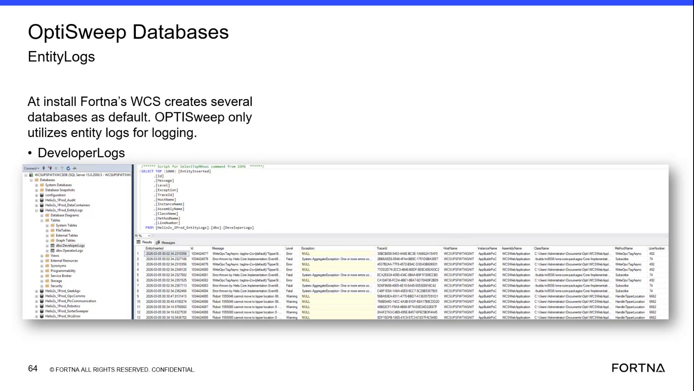

| Procedure ID | proc_filter_wcs_database_logs_for_errors_and_fatals_v1 |
|---|---|
| Title | Filter WCS Database Logs for Errors and Fatals |
| Procedure Type | diagnostic |
| Primary Role | L2_support |
| Support Safe | Yes |
| Capability Tags | wcs_system_faults |
| Access Surface | wcs_sql |
| Audience Roles | L2_support, L3_support |
| Failure Pattern Tags | system_fault |
| Validation Status | needs_sme_review |
| Merge Status | source_finalized |
Use the WCS / Helix DB (SSMS) read-only database logs to retrieve recent records and isolate records with Error or Fatal severity for support investigation. The logs can provide timestamps, messages, exception details, trace information, host and instance information, and source code location fields.
Use this diagnostic when support needs to inspect recent WCS / Helix DB log records for Error or Fatal severity during investigation of a system issue.

Responsible role: L2_support
Instruction:
In WCS / Helix DB (SSMS), select the relevant OptiSweep database that contains the database logs. The source identifies the WCS EntityLogs database as the logging database; the example shows a Helix2x_1Prod_EntityLogs database with log tables.
Expected result:
The relevant WCS / Helix database is open in SSMS and its log records or log tables are available for inspection.
Stop or Escalate If:
Responsible role: L2_support
Instruction:
In the WCS / Helix DB (SSMS), open the available database log records or use the available log query or table action to retrieve the top 100 records. Use the read-only log retrieval action; do not run an unsupported write operation.
Expected result:
SSMS displays a recent set of up to 100 database log records.
Stop or Escalate If:
Responsible role: L2_support
Instruction:
In the WCS / Helix DB (SSMS) result set, filter the displayed log records for the Error and Fatal severity values in the Level field.
Expected result:
The SSMS result set is narrowed to records classified as Error or Fatal, when such records are present.
Stop or Escalate If:
Responsible role: L2_support
Instruction:
Review the filtered Error and Fatal rows in the WCS / Helix DB (SSMS). Inspect the displayed timestamp field EntityInserted, Message, Level, Exception, TraceId, HostName, InstanceName, AssemblyName, ClassName, MethodName, and LineNumber fields when present.
Expected result:
The filtered records provide visible timestamps, severity, messages, and available exception and affected-system information for the support investigation.
Stop or Escalate If: